This section of the tutorial introduces the AMBER programs/tools necessary to set-up the input files required by sander for performing minimization and molecular dynamics using non-standard residues.
The main program employed in this section will be LEaP: A program that reads in force field, topology and coordinate information and produces the files necessary for production calculations (i.e. minimization, molecular dynamics, analysis,...). There are two versions of this program, a graphical interface called xleap and a terminal interface called tleap. Since we want to "see" graphical representations of our models, this tutorial will use xleap.
The workflow for preparing parameter files for non-standard residues is shown below:
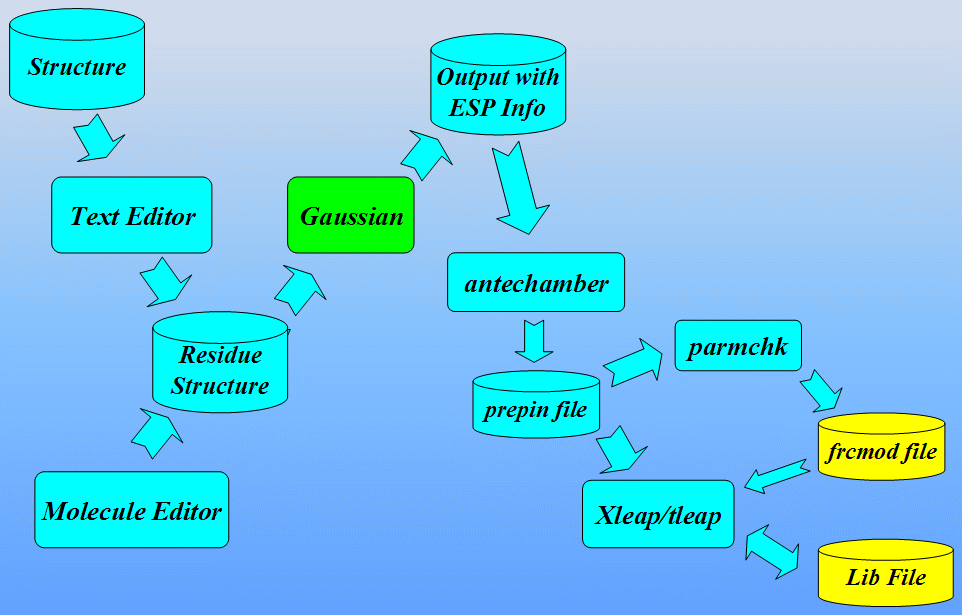
At the end we shall see how to analyze MD results extracting information from sander output file. Next we shall use a program ptraj to process and analyze sets of 3-D coordinates read in from the MD trajectory input file.
����������� The first stage is to create topology (prmtop) and coordinate (inpcrd) files for the system we wish to simulate. We will use Xleap to do this.
����������� The original file, 1CGH.pdb, is an X-ray structure of a human cathepsin G in complex with inhibitor Suc-Val-Pro-Phep-(OPh)2 covalently bonded to the Ser-195 of a protein.
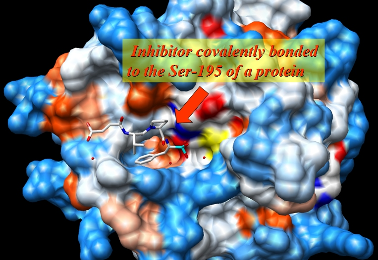
����������� 1) Read all of the header information in a pdb file.
����������� 2) All of the connectivity data at the end of the PDB was removed as this will not be used by XLeap.
��������������� 3) Residue names of cysteines 42, 58, 136, 168, 182, and 201 have been changed from CYS to CYX.
����������� 4) All histidine residues in original 1CGH.pdb file are protonated at both positions, so all HIS residues have been renamed into HIP.
����������� 5) Serine-195 residue of a protein is covalently bonded to the PPH residue of an inhibitor. Since we can expect a large disturbance in charge distribution on a Serine-195 after phosphorilation we will define it as a separate residue (SEP in our case � SErine Phosphorilated)
Original:
ATOM�� 1871�
ATOM�� 1872� CA� SER A 195����� 14.819� 33.619�� 5.831� 1.00 11.59���������� C
ATOM�� 1873� C�� SER A 195����� 15.463� 32.581�� 6.740� 1.00 10.79���������� C
ATOM�� 1874� O�� SER A 195����� 14.748� 31.761�� 7.334� 1.00 11.03���������� O
ATOM�� 1875� CB� SER A 195����� 14.319� 34.766�� 6.722� 1.00 14.66���������� C
ATOM�� 1876� OG� SER A 195����� 13.988� 35.933�� 5.966� 1.00 14.83���������� O
ATOM�� 1877� H�� SER A 195����� 12.845� 33.454�� 5.036� 1.00 20.00���������� H
Modified:
ATOM�� 1871� N�� SEP A 195����� 13.718� 33.026�� 5.055� 1.00 11.57���������� N
ATOM�� 1872� CA� SEP A 195����� 14.819� 33.619�� 5.831� 1.00 11.59���������� C
ATOM�� 1873� C�� SEP A 195����� 15.463� 32.581�� 6.740� 1.00 10.79���������� C
ATOM�� 1874� O�� SEP A 195����� 14.748� 31.761�� 7.334� 1.00 11.03���������� O
ATOM�� 1875� CB� SEP A 195����� 14.319� 34.766�� 6.722� 1.00 14.66���������� C
ATOM�� 1876� OG� SEP A 195����� 13.988� 35.933�� 5.966� 1.00 14.83���������� O
ATOM�� 1877� H�� SEP A 195����� 12.845� 33.454�� 5.036� 1.00 20.00���������� H
The resulting pdb file is here: 1cgh-modified.pdb
Next step was in editing resulting pdb file in molecular editor and deleting all hydrogens and water molecules which are more than 3 A away from the protein.
Pdb file is here: 1cgh-mod2.pdb
If simply loaded our edited pdb file above into XLeap at this point the vast majority of the file would load ok. There would be problems, however, with our three non-standard residues SEP, SIN, and PPH.
Start xleap:
xleap -s -f leaprc.ff12SB
Load PDB file:
x=loadpdb 1cgh-mod2.pdb
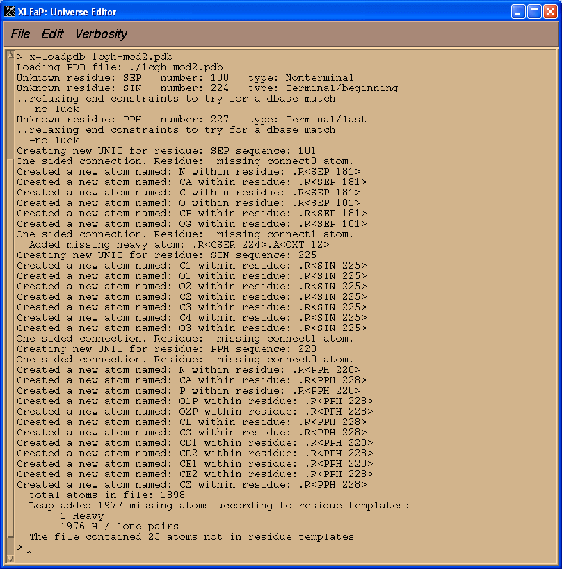
We see that XLeap cannot load our PDB file successfully. Before we can successfully load our modified pdb file into XLeap we need to tell it what our three non-standard units are.
Creating SIN unit
First we shall create library file for our SIN unit. The quickest way to do this, since we need initial structure for this unit, is to simply cut it out of the 1cgh-mod2.pdb file and save it as its own pdb file.
So, we cut out SIN and adjacent amino-acid, VAL: sin-val.pdb. Our aim is to prepare a system for calculating RESP charges using Gaussian.
We load it in into Xleap and start editing
sin = loadpdb sin-val.pdb
edit sin
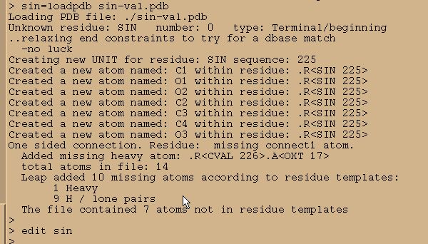
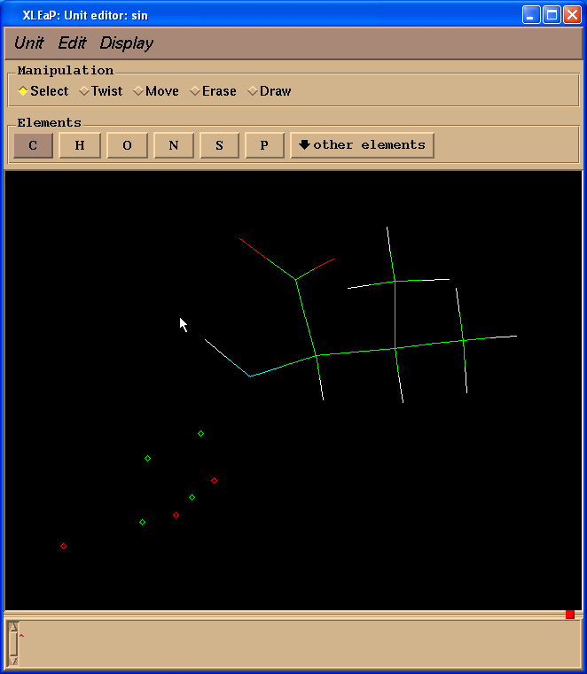
Within this window the LEFT mouse button allows atom selection (drag and drop), the MIDDLE mouse button rotates the molecule and the RIGHT mouse button translates it. If the MIDDLE button does not work you can simulate it by holding down the Ctrl key and the LEFT mouse button. To make the image larger or smaller, simultaneously hold down the MIDDLE and RIGHT buttons (or Ctrl and RIGHT) and move the mouse up to zoom in or down to zoom out.
If you played with selecting atoms using the left mouse button you can unselect a region by holding down the shift key while drawing the selection rectangle. To select everything, double click the LEFT button (and to unselect, do the same while holding down the shift key).
Then we select �Draw� checkbox in the �Manipulation� panel:
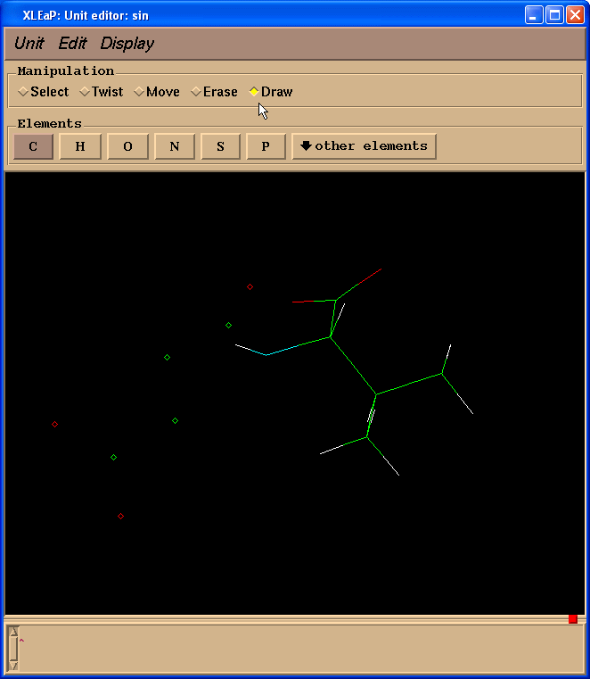
And start to draw missing bonds (click on atom and drag cursor to another atom):
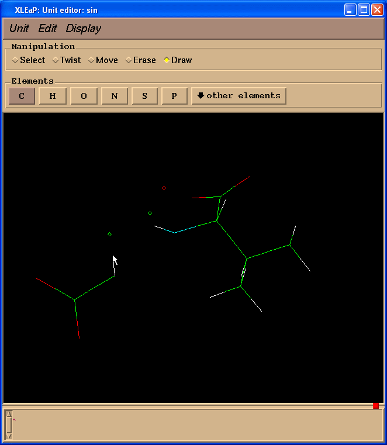
Since we don�t need Valine residue to calculate charges but only a N(Me) moiety which will mimic an adjacent amino-acid we switched to �Erase� mode
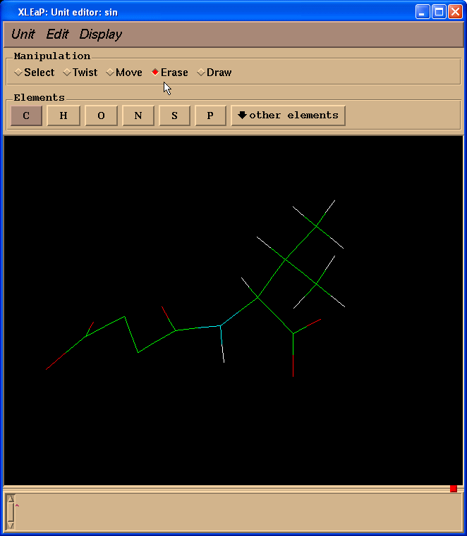
and started to erase atoms of a valine residue (point cursor on atom to be erased and left-click)
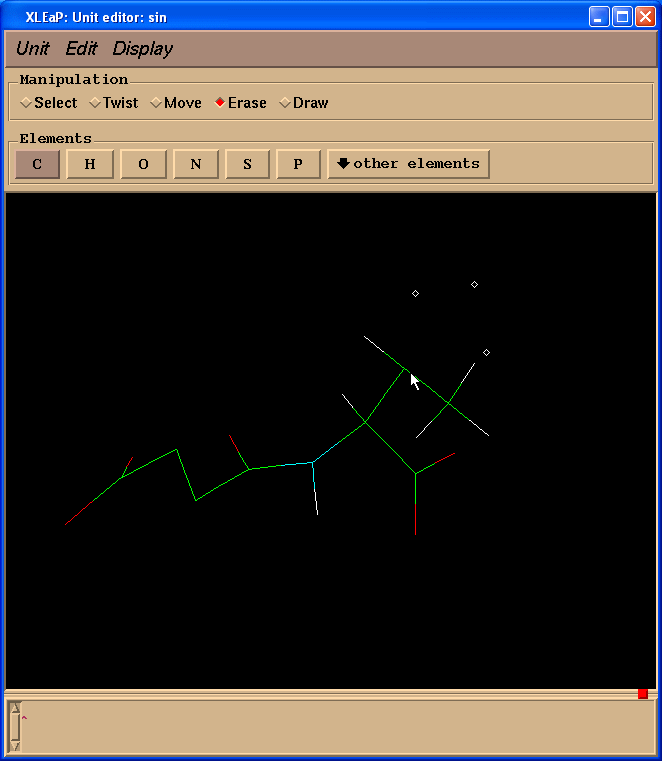
So, our resulting structure looks like this:
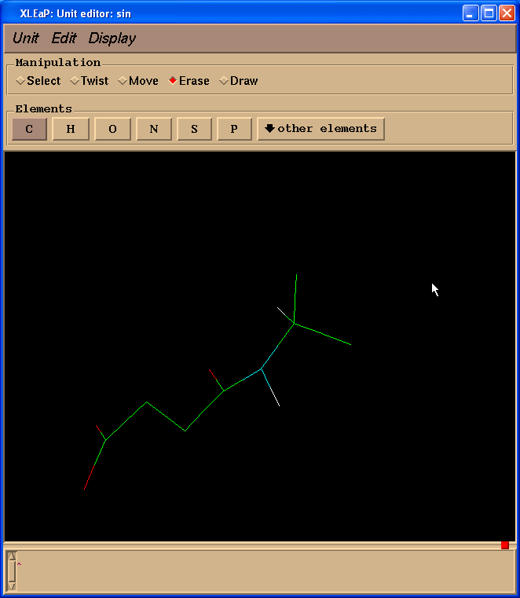
Next we shall change two carbon atoms into hydrogen ones. To do so we need to switch back to �Draw� mode and select �H� in �Elements� panel. Then one needs to point cursor to the carbon atoms to be changed and left-click:
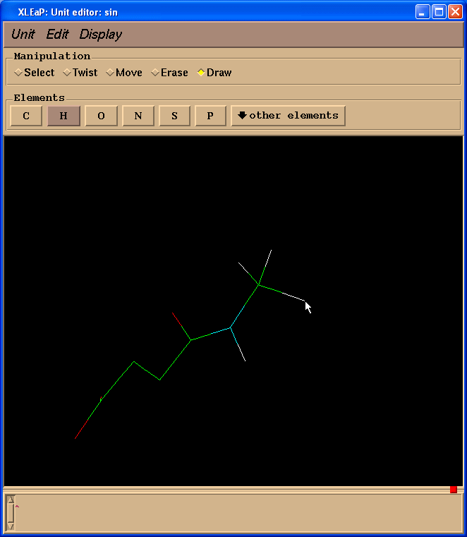
Now we need to add missing hydrogen atoms to the SIN residue. The easiest way to do this is to go to the �Unit�->�Add H & Build� menu.
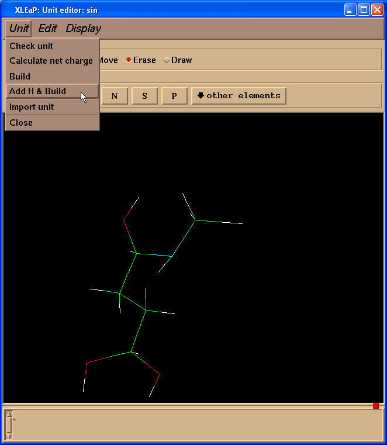
Xleap will add more hydrogen atoms than we need however all extra hydrogens could be easily deleted. So, our final structure looks like this:
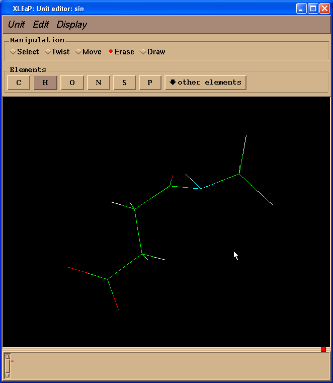
Geometry is far from ideal however we shall optimize it using Gaussian.
savepdb sin sin-for-resp.pdb
We edit it to prepare input file for Gaussian:
ATOM����� 1� C1� SIN���� 1����� 13.529� 47.374� -0.405� 1.00� 0.00
ATOM����� 2� O1� SIN���� 1����� 12.629� 47.356� -1.278� 1.00� 0.00
ATOM����� 3� O2� SIN���� 1����� 14.879� 47.872� -0.578� 1.00� 0.00
ATOM����� 4� C2� SIN���� 1����� 13.079� 46.708�� 0.910� 1.00� 0.00
ATOM����� 5� C3� SIN���� 1����� 14.191� 45.931�� 1.666� 1.00� 0.00
ATOM����� 6� C4� SIN��� �1����� 13.679� 45.298�� 2.936� 1.00� 0.00
ATOM����� 7� O3� SIN���� 1����� 13.739� 45.940�� 3.995� 1.00� 0.00
ATOM����� 8 1H1� SIN���� 1����� 12.350� 46.051�� 0.719� 1.00� 0.00
ATOM����� 9 2H1� SIN���� 1����� 12.740� 47.407�� 1.539� 1.00� 0.00
ATOM���� 10 3H1� SIN���� 1����� 14.943� 46.553�� 1.885� 1.00� 0.00
ATOM���� 11� H14 SIN���� 1����� 14.531� 45.189�� 1.089� 1.00� 0.00
TER
ATOM���� 12� N�� VAL���� 2����� 12.810� 44.301�� 2.755� 1.00� 0.00
ATOM���� 13� H�� VAL���� 2����� 13.554� 43.738�� 2.367� 1.00� 0.00
ATOM���� 14� CA� VAL���� 2����� 12.041� 43.758�� 3.871� 1.00� 0.00
ATOM���� 15� HA� VAL���� 2����� 12.147� 44.395�� 4.749� 1.00� 0.00
ATOM���� 16� H18 VAL���� 2����� 12.374� 42.841�� 4.091� 1.00� 0.00
ATOM���� 17� H19 VAL���� 2����� 11.075� 43.710�� 3.618� 1.00� 0.00
TER
END
For the next step input is different for g03 and g09.
And after editing (sin-for-resp-g03.gjf):
# Opt HF/6-31g* Pop=MK iop(6/33=2)
SIN
-1 1
C1 ��13.529� 47.374� -0.405
O1 ��12.629� 47.356� -1.278
O2 ��14.879� 47.872� -0.578
C2 ��13.079� 46.708�� 0.910
C3 ��14.191� 45.931�� 1.666
C4 ��13.679� 45.298�� 2.936
O3 ��13.739� 45.940�� 3.995
H11 �12.350� 46.051�� 0.719
H12 �12.740� 47.407�� 1.539
H13 �14.943� 46.553�� 1.885
H14� 14.531� 45.189�� 1.089
N� ��12.810� 44.301�� 2.755
H� ��13.554� 43.738�� 2.367
C ���12.041� 43.758�� 3.871
H ���12.147 �44.395�� 4.749
H18� 12.374� 42.841�� 4.091
H19� 11.075� 43.710�� 3.618
The meaning of the Gaussian options are as follows:
Now we can run the Gaussian G09 program:
g03 <sin-for-resp-g03.gjf >sin-for-resp-g03.out
Since it requires about 20 minutes to run use run-sin-g03.sh on the PBS systems, i.e.
qsub run-sin-g03.sh
We shall use Antechamber to assign atom types to this molecule and also calculate a set of point RESP charges for us. Antechamber is the most important program within the set of Antechamber tools. It can perform many file conversions and can also assign atomic charges and atom types. It will also generate a series of intermediate files (all in capital letters).
Let's try using antechamber on our sin-for-resp-g03.out file. To create the "prepin" file we require to define a new unit in leap we simply run the following command:
antechamber -i sin-for-resp-g03.out -fi gout -o sin.prepin \
-fo prepi -c resp -s 2 -rn SIN -at amber -nc -1
Here the -i sin-for-resp-g03.out specifies the name of the Gaussian output with information about quantum-chemically calculated potential around a molecule
The -fi gout tells antechamber that this is a Gaussian output format file (we could easily have used any number of other supported formats including PDB [pdb], Gaussian Z-Matrix [gzmat], Gaussian Output [gout], MDL [mdl], amber Restart [rst], Sybyl Mol2 [mol2]).
The -o sin.prepin specifies the name of our output file
The -fo prepi states that we want the output file to be of amber PREP format (this is an internal format supported by Leap).
The -c resp option tells antechamber to use the RESP charge model in order to calculate the atomic point charges
The -s 2 option defines the verbosity of the status information provided by antechamber. In this case we have selected verbose output (2).
The �rn SIN defines residue name SIN,
�at amber defines atom types (AMBER in our case), and
�nc -1 �is a net molecular charge.
So, go ahead and run the above command. The screen output should be as follows:
Running: /apps/amber/12/bin/bondtype -j full -i ANTECHAMBER_BOND_TYPE.AC0 -o ANTECHAMBER_BOND_TYPE.AC -f ac
Running: /apps/amber/12/bin/atomtype -i ANTECHAMBER_AC.AC0 -o ANTECHAMBER_AC.AC -p amber
Running: /apps/amber/12/bin/espgen -o ANTECHAMBER.ESP -i sin-for-resp-g03.out
Running: /apps/amber/12/bin/respgen -i ANTECHAMBER_RESP.AC -o ANTECHAMBER_RESP1.IN -f resp1 -e 1
Running: /apps/amber/12/bin/respgen -i ANTECHAMBER_RESP.AC -o ANTECHAMBER_RESP2.IN -f resp2 -e 1
Running: /apps/amber/12/bin/resp -O -i ANTECHAMBER_RESP1.IN -o ANTECHAMBER_RESP1.OUT -e ANTECHAMBER.ESP -t qout
Running: /apps/amber/12/bin/resp -O -i ANTECHAMBER_RESP2.IN -o ANTECHAMBER_RESP2.OUT -e ANTECHAMBER.ESP -q qout -t QOUT
Running: /apps/amber/12/bin/prepgen -i ANTECHAMBER_PREP.AC -f int -o sin.prepin -rn "SIN" -rf molecule.res
We need to use other options for Gaussian g03, here is input file, sin-for-resp.gjf:
# Opt HF/6-31g* Pop=MK IOp(6/50=1) SIN -1 1 C1 13.529 47.374 -0.405 O1 12.629 47.356 -1.278 O2 14.879 47.872 -0.578 C2 13.079 46.708 0.910 C3 14.191 45.931 1.666 C4 13.679 45.298 2.936 O3 13.739 45.940 3.995 H11 12.350 46.051 0.719 H12 12.740 47.407 1.539 H13 14.943 46.553 1.885 H14 14.531 45.189 1.089 N 12.810 44.301 2.755 H 13.554 43.738 2.367 C 12.041 43.758 3.871 H 12.147 44.395 4.749 H18 12.374 42.841 4.091 H19 11.075 43.710 3.618
antechamber-ini.esp
antechamber.esp
So, here we use other iop option: IOp(6/50=1)
Also we need to specify file name(s) where g09 will write data in the so-called Gaussian 09 ESP file. Here, we use two file names, antechamber-ini.esp and antechamber.esp, because the first one will be used for the initial structure while the second one - for the optimized structure.
g09 < sin-for-resp.gjf > sin-for-resp-g09.out
Or use a script, run-sin-g09.sh, for the PBS�system:
qsub run-sin-g09.sh
antechamber -i antechamber.esp -fi gesp -o sin.prepin \
-fo prepi -c resp -s 2 -rn SIN -at amber -nc -1
Here the -i antechamber.esp specifies the name of the Gaussian ESP (Electrostatic Potential) file with information about quantum-chemically calculated potential around a molecule
The -fi gesp tells antechamber that this is Gaussian ESP format file (we could easily have used any number of other supported formats including PDB [pdb], Gaussian Z-Matrix [gzmat], Gaussian Output [gout], MDL [mdl], amber Restart [rst], Sybyl Mol2 [mol2]).
The -o sin.prepin specifies the name of our output file
The -fo prepi states that we want the output file to be of amber PREP format (this is an internal format supported by Leap).
The -c resp option tells antechamber to use the RESP charge model in order to calculate the atomic point charges
The -s 2 option defines the verbosity of the status information provided by antechamber. In this case we have selected verbose output (2).
The �rn SIN defines residue name SIN,
�at amber defines atom types (AMBER in our case), and
�nc -1 �is a net molecular charge.
You should also get a whole series of files written to your directory:
1cgh-mod2.pdb������������ ANTECHAMBER_RESP1.OUT������ punch
1cgh-modified.pdb�������� ANTECHAMBER_RESP2.IN������� qout
1CGH.pdb����������������� ANTECHAMBER_RESP2.OUT������ QOUT
ANTECHAMBER_AC.AC�������� ANTECHAMBER_RESP.AC�������� sep-and-pph-for-resp-xleap.pdb
ANTECHAMBER_AC.AC0������� ATOMTYPE.INF��������������� sin-for-resp.out
ANTECHAMBER_BOND_TYPE.AC� esout���������������� ������sin-for-resp.pdb
ANTECHAMBER.ESP���������� leap.log������������������� sin.prepin
ANTECHAMBER_PREP.AC������ NEWPDB.PDB����������������� sin-val.pdb
ANTECHAMBER_PREP.AC0����� pph-and-sep-in-protein.pdb
ANTECHAMBER_RESP1.IN����� PREP.INF
The files in CAPITALS are all intermediate files used by antechamber and are not required here. You can safely delete them. These files are not deleted by default since they may be of interest if things didn't work correctly.
The file that we are really interested in, and the reason we ran Antechamber in the first place, is the sin.prepin file. This contains the definition of our SIN residue including all of the charges and atom types that we will load into Leap to when creating our prmtop and inpcrd files.
While the most likely combinations of bond, angle and dihedral parameters are defined in this file it is possible that our molecule might contain combinations of atom types for bonds, angles or dihedrals that have not been parameterised. If this is the case then we will have to specify any missing parameters before we can create our prmtop and inpcrd files in Leap.
We can use the utility parmchk to test if all the parameters we require are available.
parmchk -i sin.prepin -f prepi -o sin.frcmod
Run this command now and it will produce a file called sin.frcmod. This is a parameter file that can be loaded into Leap in order to add missing parameters. Here it will contain all of the missing parameters. If it can antechamber will fill in these missing parameters by analogy to a similar parameter. You should check these parameters carefully before running a simulation. If antechamber can't empirically calculate a value or has no analogy it will either add a default value that it thinks is reasonable or alternatively insert a place holder (with zeros everywhere) and the comment "ATTN: needs revision". In this case you will have to manually parameterize this yourself.
For the purposes of this tutorial we shall assume that the parameters Antechamber has suggested for us are acceptable. Ideally you should really test these parameters (by comparing to ab initio calculations for example) to ensure they are reasonable.
To complete creation of a SIN residue we shall load sin.prepin file into Xleap, delete extra atoms which simulate an adjacent peptide bond, and save resulting structure as an Amber library file.
loadamberprep sin.prepin
list
You should see a new unit called SIN.
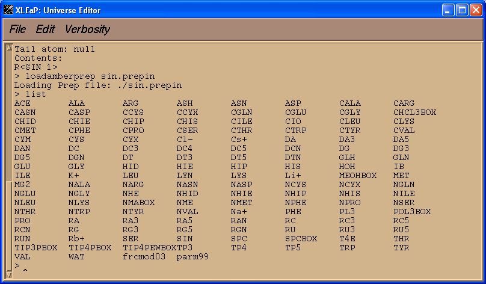
edit SIN
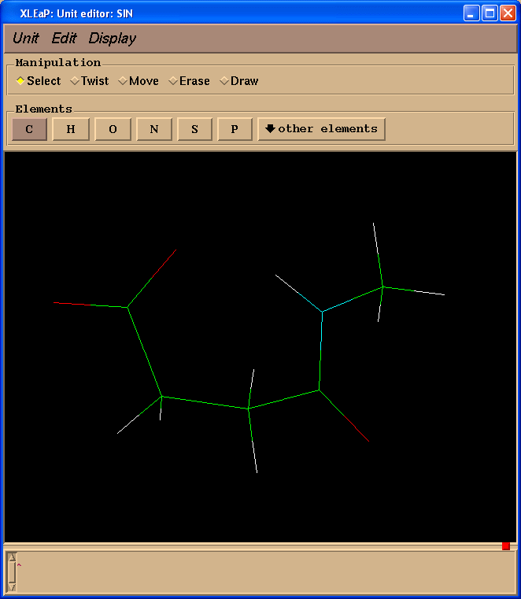
Delete NMe group:
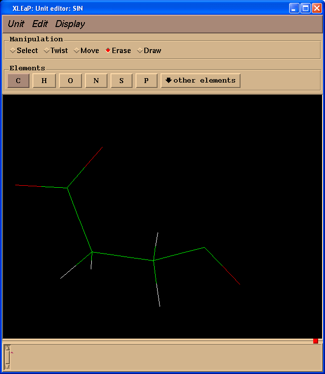
After deleting NMe group we should ensure that our residue has an integral total charge -1. Charge command will tell us about current total charge:
charge SIN
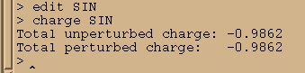
So, we need to add -0.0138 charge. To edit atoms one needs to select them first (left-click and drag a mouse):
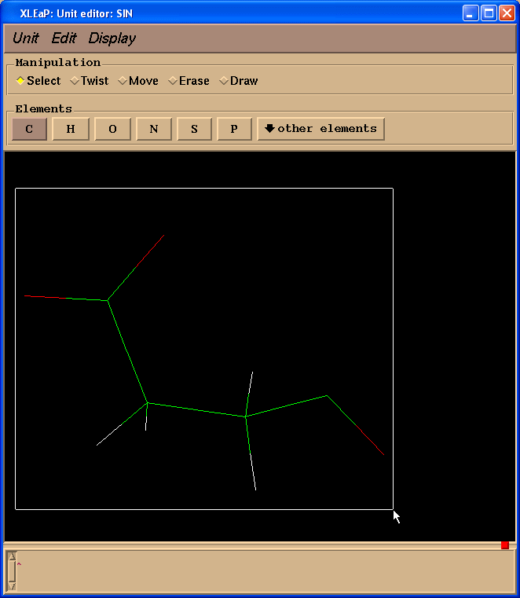
Then select from the Menu �Edit�->�Edit selected atoms�:
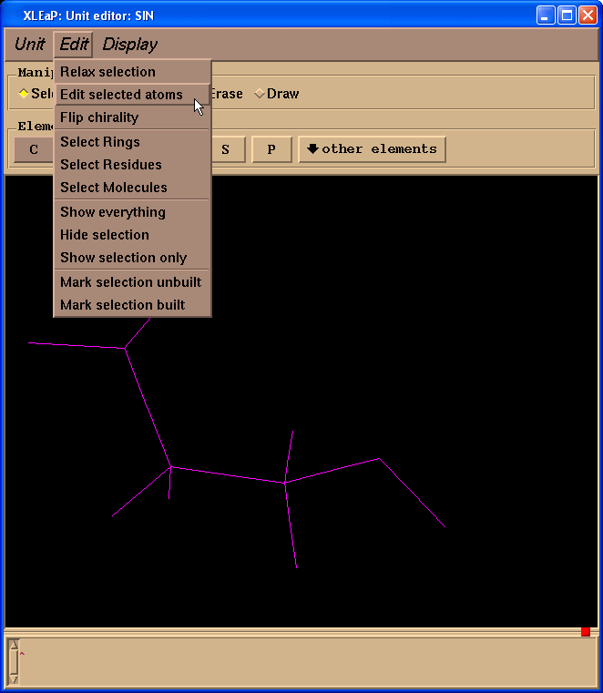
We shall see a table:
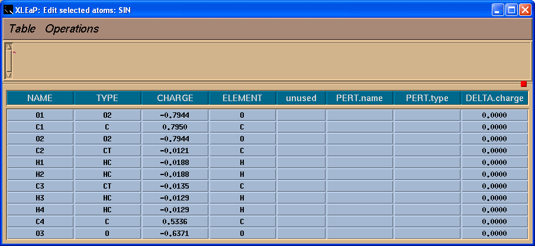
Left column contains atom names. To see a correspondence between atom names and 3D structure we shall label atoms in the Xleap unit editor:
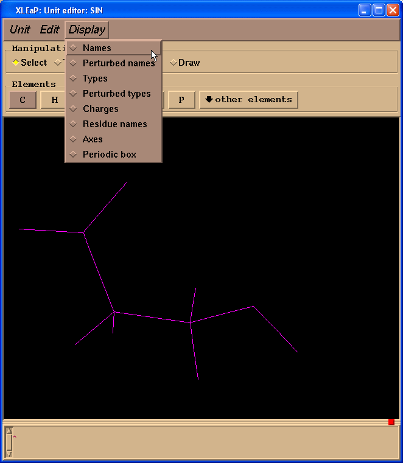
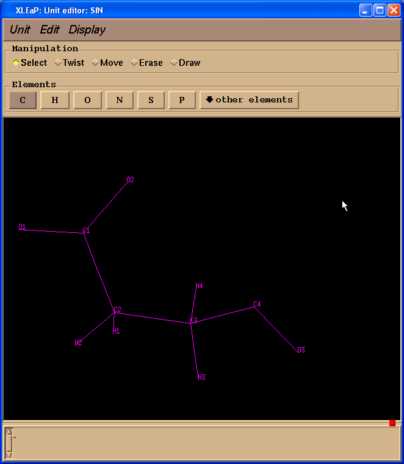
To ensure that atom names in SIN residue are the same as those in our original pdb file we shall load sin-val.pdb file prepared previously:
res = loadpdb sin-val.pdb
edit res
We shall see the second window of unit editor:
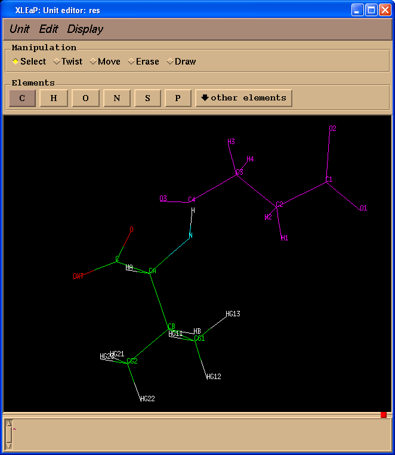
In this particular case atoms in both structures have the same atom names which is not always the case because during preparation of input file for Gaussian atom name information could be lost.
So, in the table we shall add -0.0138 charge to the C4 atom to have a total charge on the residue -1:
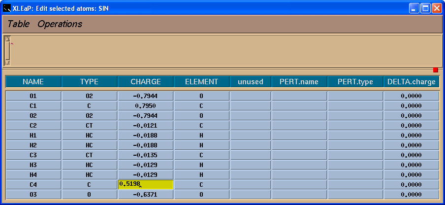
Next we need to save our changes using menu �Table�->�Save and quit�:
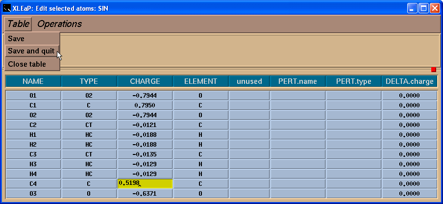
The last thing we need to do before we can save a library file for our completed unit is to tell xleap what is the head atom for this unit and what is the tail atom. This information is used in order to connect the protein back bone. E.g. if we type
desc SIN
we will see that there is no tail defined and a wrong head:
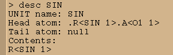
So we need to specify these for our SIN unit using set command. Type:
set SIN head null
set SIN tail SIN.SIN.C4
And that's us done. Now we can save the completed library file using saveoff command:
saveoff SIN sin.lib
As a final check we shall load again a fragment of an original pdb file, sin-val.pdb, with SIN residue:
res = loadpdb sin-val.pdb
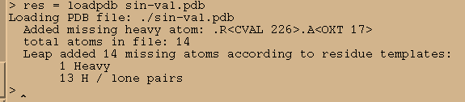
There are no errors reported�
Creating SEP and PPH units
To create library files for SIP and PPH units we shall start in the same manner as for SIN unit: we simply cut it out of the 1cgh-mod2.pdb file and save it as its own pdb file.
So, we cut out SEP (former Ser-195), PPH and adjacent amino-acids, Val, Glu, Gly: pph-and-sep-in-protein.pdb.
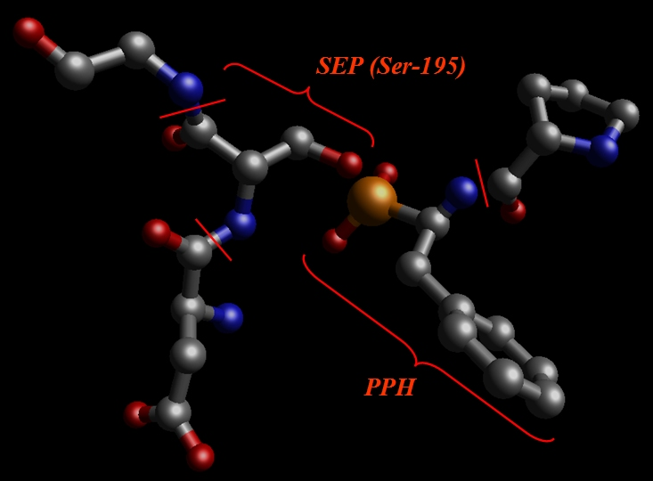
Our aim is to prepare a system for calculating RESP charges using Gaussian.
We load it in into Xleap and start editing
res=loadpdb pph-and-sep-in-protein.pdb
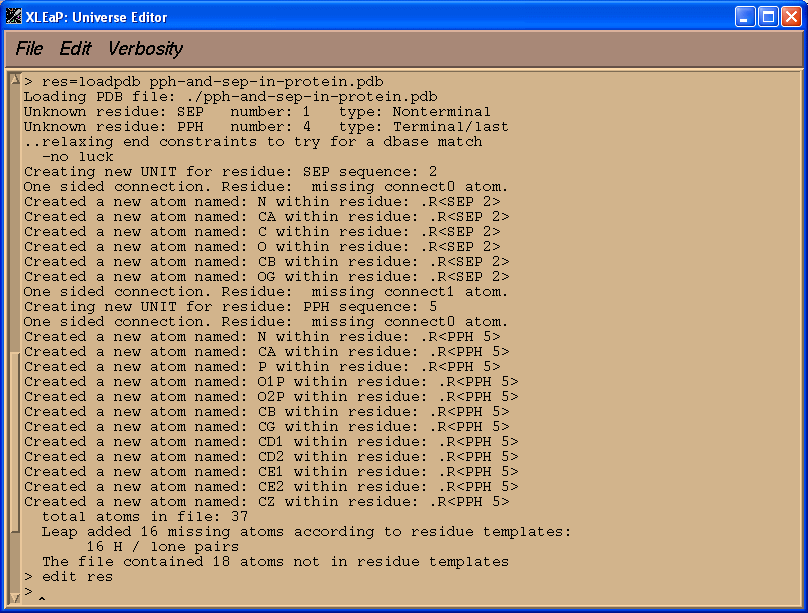
edit res
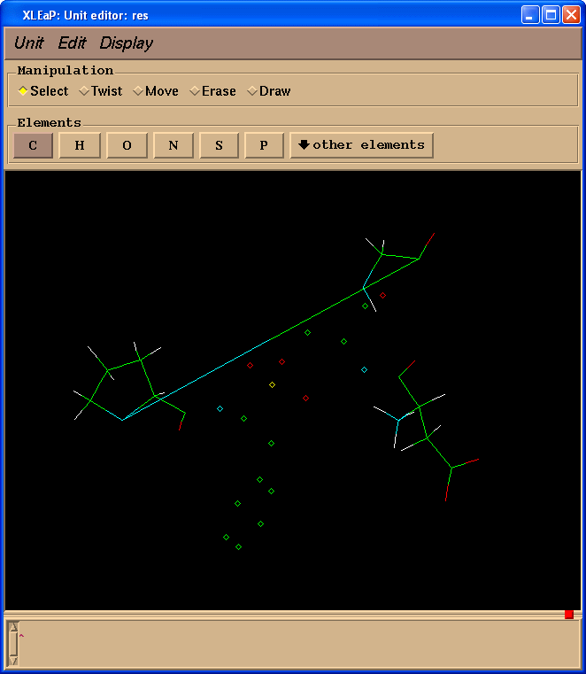
We shall create missing bonds (select "Draw" in "Manipulation" panel):
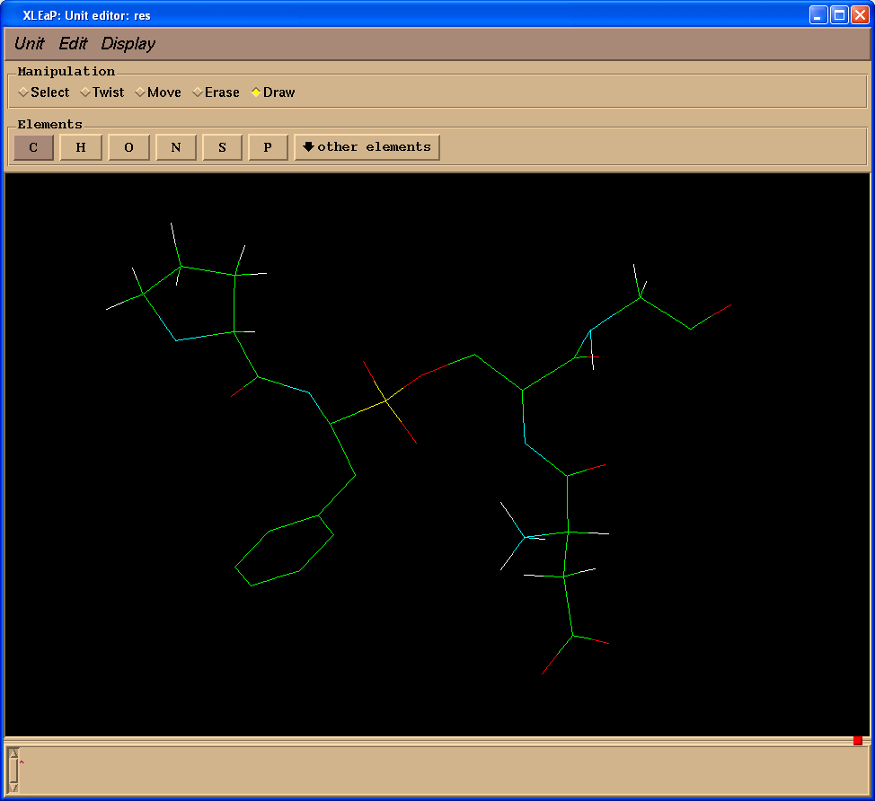
Delete extra atoms (select "Erase" in "Manipulation" panel):
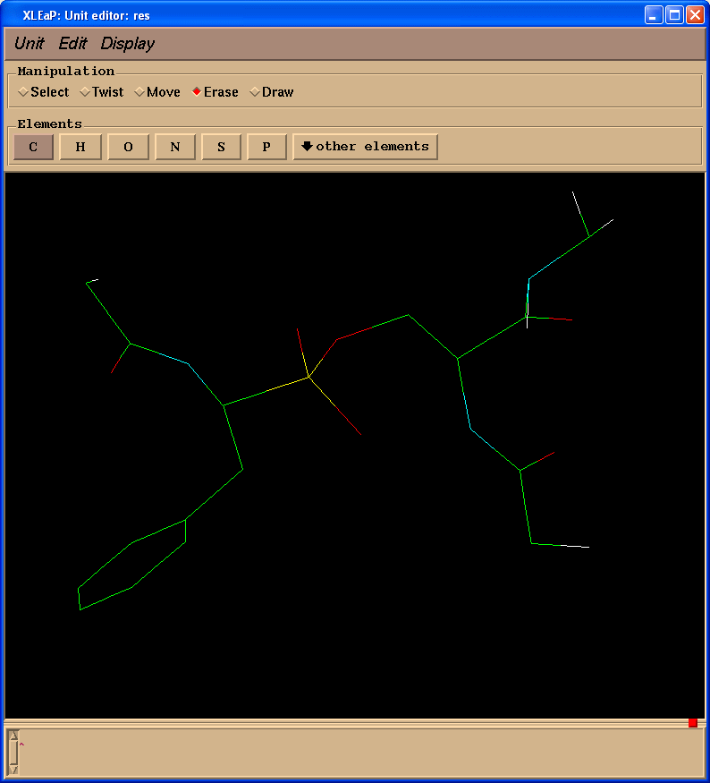
And, finally, add missing protons. Our final structure looks like this (pph-for-resp.pdb):
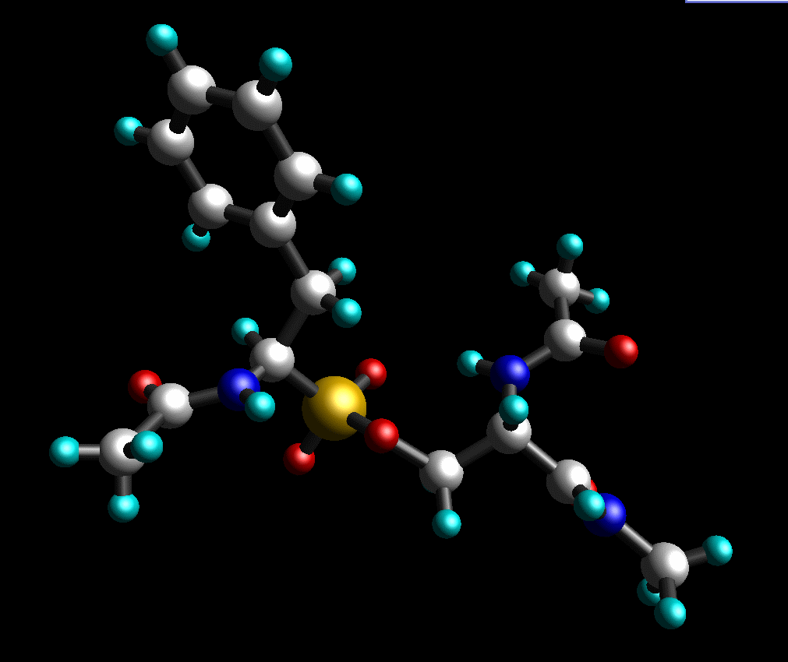
Input file for Gaussian: pph-for-resp.gjf
g03 <pph-for-resp.gjf >pph-for-resp.log
Running antechamber:
$AMBERHOME/exe/antechamber -i pph-for-resp.log� -fi gout -o pph.prepin -fo prepi -c resp -s 2 -rn PPH -at amber -nc -1
Its output:
Running: /opt/amber8/exe/bondtype -i ANTECHAMBER_BOND_TYPE.AC -o ANTECHAMBER_BOND_TYPE.AC -f ac -j full
Bond types are assigned for valence state 11 with penalty of 2
Running: /opt/amber8/exe/atomtype -i ANTECHAMBER_AC.AC0 -o ANTECHAMBER_AC.AC -p amber
Running: /opt/amber8/exe/espgen -o ANTECHAMBER.ESP -i pph-for-resp.log
Running: /opt/amber8/exe/respgen -i ANTECHAMBER_RESP.AC -o ANTECHAMBER_RESP1.IN -f resp1
Running: /opt/amber8/exe/respgen -i ANTECHAMBER_RESP.AC -o ANTECHAMBER_RESP2.IN -f resp2
Running: resp -O -i ANTECHAMBER_RESP1.IN -o ANTECHAMBER_RESP1.OUT -e ANTECHAMBER.ESP -t qout
�Amber8 Module: resp
resp -O -i ANTECHAMBER_RESP2.IN -o ANTECHAMBER_RESP2.OUT -e ANTECHAMBER.ESP -q qout -t QOUT
�Amber8 Module: resp
Running: /opt/amber8/exe/atomtype -i ANTECHAMBER_PREP.AC0 -o ANTECHAMBER_PREP.AC -p amber
Running: /opt/amber8/exe/prepgen -i ANTECHAMBER_PREP.AC -f int -o pph.prepin -rn "PPH" -rf molecule.res
We can use the utility parmchk to test if all the parameters we require are available.
$AMBERHOME/exe/parmchk -i pph.prepin -f prepi -o pph.frcmod
Run this command now and it will produce a file called pph.frcmod. This is a parameter file that can be loaded into Leap in order to add missing parameters.
Load pph.prepin file into Xleap, delete extra atoms which simulate an adjacent peptide bond, and save resulting structure as an Amber library file.
loadamberprep pph.prepin
edit PPH
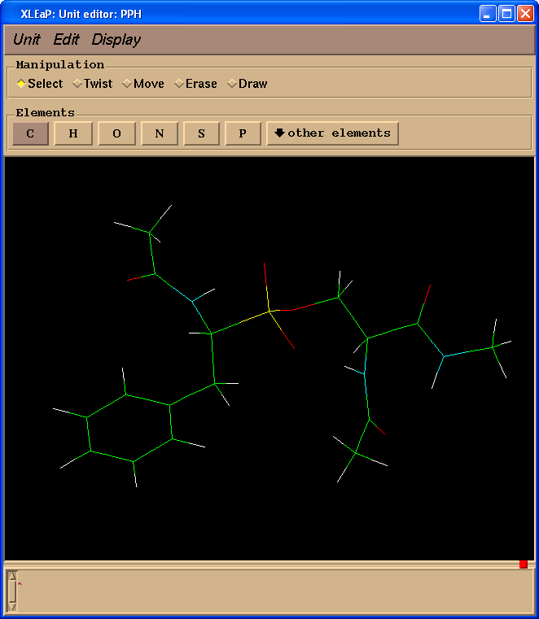
Delete atoms mimicking peptide bonds (select "Erase" in "Manipulation" panel):
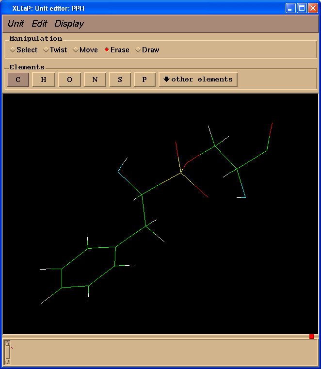
Count a total charge
charge PPH
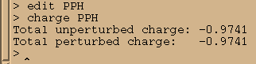
So, we need to add a charge -0.0259 to the residue. We shall add it to the Phosphorus atom:
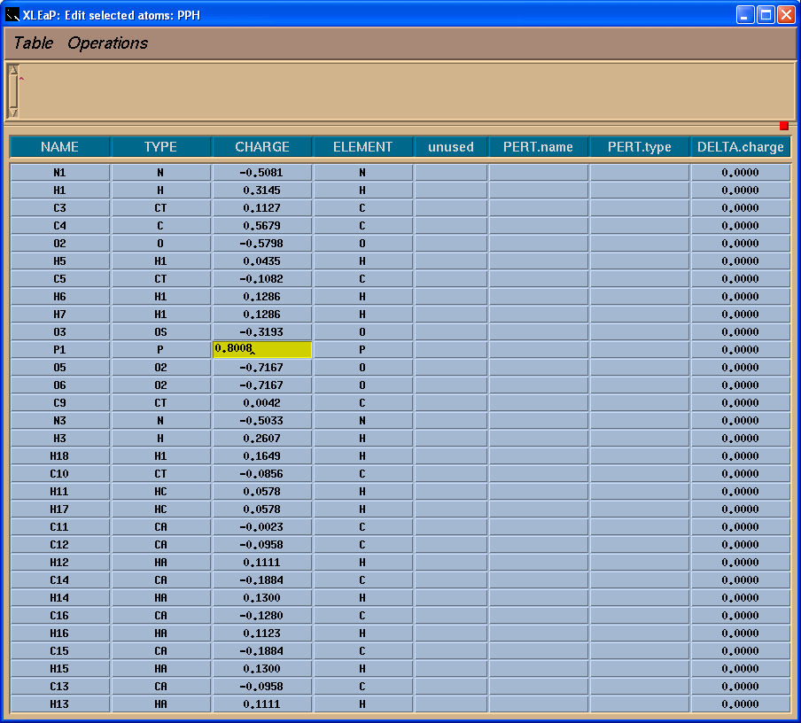
Since our current unit PPH contains two residues PPH and SEP we shall split it into two:
SEP = copy PPH
This command creates a copy of PPH so that we can edit separately PPH and SEP.
Start editing from �sep� and delete all extra atoms:
edit SEP
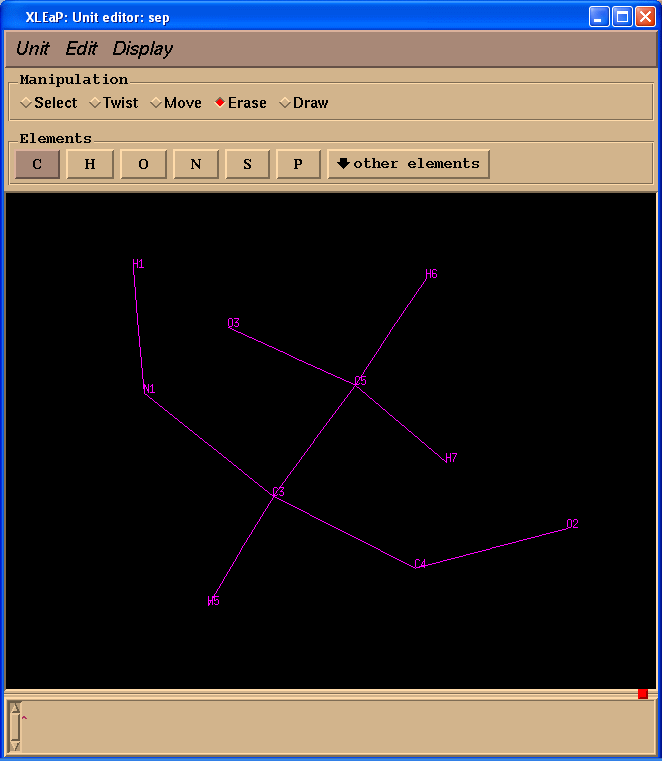
A problem is that atom names in our SEP residue do not correspond to those in the original pdb. We shall fix it:
We shall name unit and residue as �SEP�
sepname = �SEP�
set SEP name sepname
set SEP.PPH name sepname
A final touch will be in defining residue�s head and tail atoms
set SEP head SEP.SEP.N
set SEP tail SEP.SEP.C
set SEP.SEP restype protein
Finally we save it as a library file:
saveoff SEP sep.lib
Start editing �PPH� and delete all extra atoms:
edit PPH
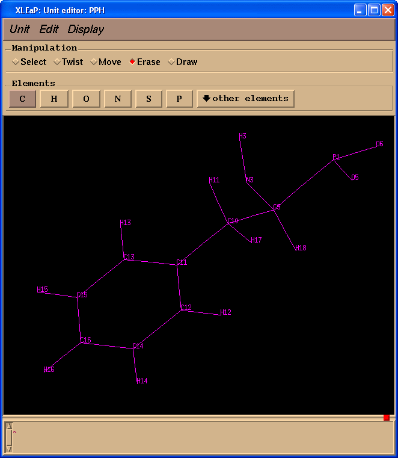
Unfortunately, during Gaussian calculations information about atom names had been lost, so we need to ensure that our PPH residue has the same atom names as PPH in the original pdb file. To make our task easier we shall download file pph-and-sep-in-protein.pdb
test = loadpdb pph-and-sep-in-protein.pdb
edit test
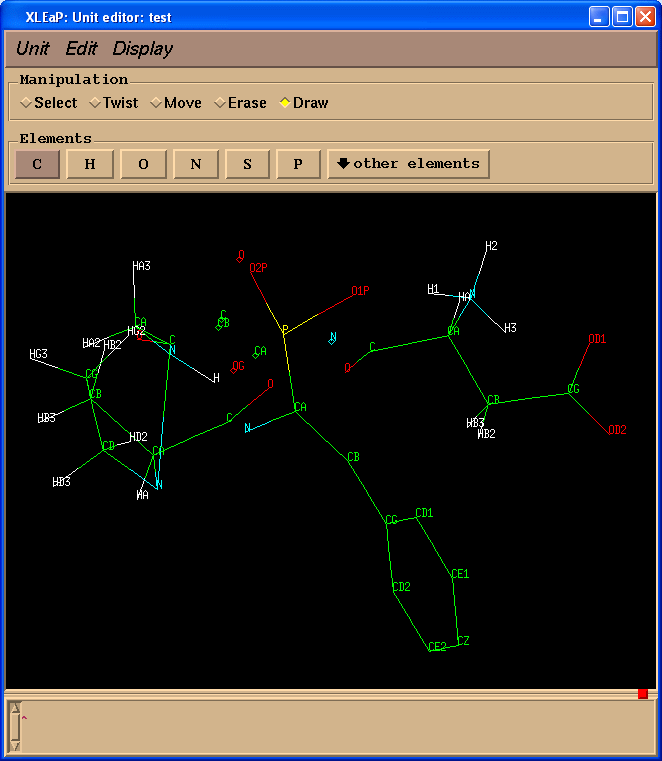
Now we can easily rename atoms in the PPH:
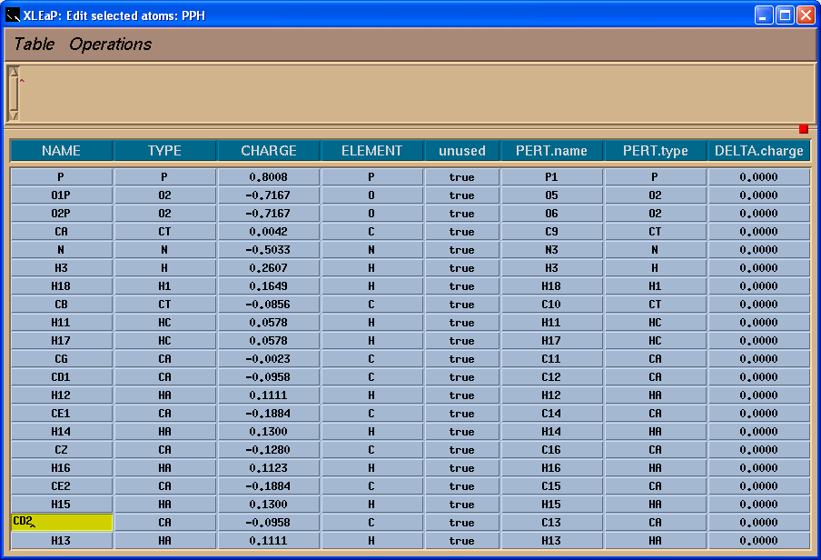
As a final touch we shall define head and tail atoms:
set PPH head PPH.PPH.N
set PPH tail null
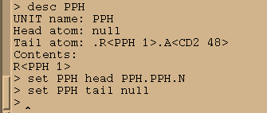
and save it as library file:
saveoff PPH pph.lib
We quit from Xleap
quit
and restart it again
$AMBERHOME/exe/xleap -s -f $AMBERHOME/dat/leap/cmd/leaprc.ff03
Before loading our pdb file we shall load library files for three residues, SIN, SEP, PPH, and parameter files, sin.frcmod and pph.frcmod:
loadoff sin.lib
loadoff sep.lib
loadoff pph.lib
loadamberparams pph.frcmod
loadamberparams sin.frcmod
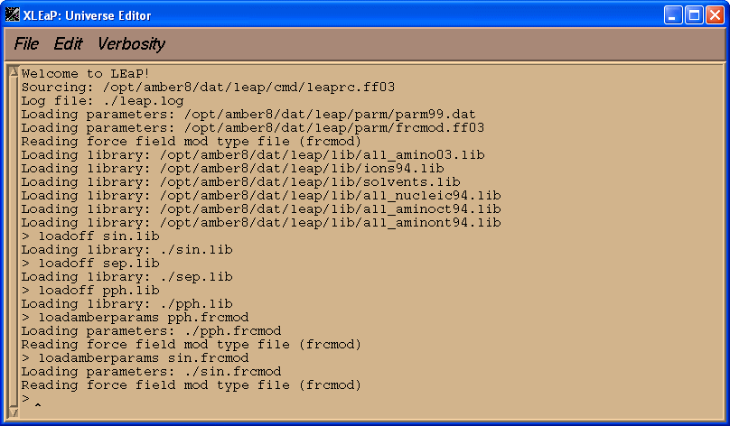
Now we can try to load pdb file, 1cgh-mod2.pdb:
1cgh = loadpdb 1cgh-mod2.pdb
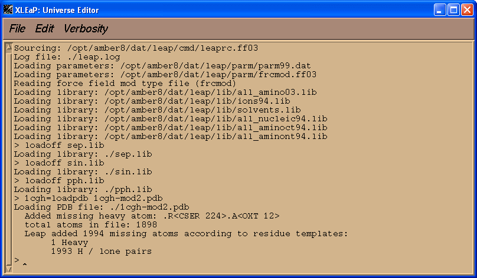
Voila, now there are no errors!
As a final touch we should add three S-S bonds between Cys residues as well as a covalent bond between PPH and SEP using bond command.
bond 1cgh.29.SG 1cgh.45.SG
bond 1cgh.122.SG 1cgh.187.SG
bond 1cgh.152.SG 1cgh.166.SG
bond 1cgh.181.OG 1cgh.228.P
We save protein in library file
saveoff 1cgh 1cgh.lib
We can now go ahead and solvate our system in a truncated octahedral box of TIP3P water.
solvateoct 1cgh TIP3PBOX 12
The next thing we need to do is to add counter ions. Before we issue the "addions" command, we need to figure out whether our system is positively or negatively charged.� If it is positively charged, we will want to add negatively charged Cl- ions to counter it and if it is negatively charged, then we'll add Na+ to counter it. To calculate the charge of our system, we can use the command "charge" or �check� (see above):
charge 1cgh
Next we charge neutralise our system since it currently has a charge of +27 (check 1cgh). We shall therefore add a total of 27 Cl- ions.
addions 1cgh Cl- 27
Saving parameters:
saveamberparm 1cgh 1cgh-water-box.top 1cgh-water-box.crd
The resulting topology file, 1cgh-water-box.top and file with coordinates 1cgh-water-box.crd are quite large.
We can save the resulted structure in the pdb file to be viewed later with a more sophisticated viewing program available
savepdb 1cgh 1cgh-water-box.pdb
We can have a look at our system in Xleap:
edit 1cgh
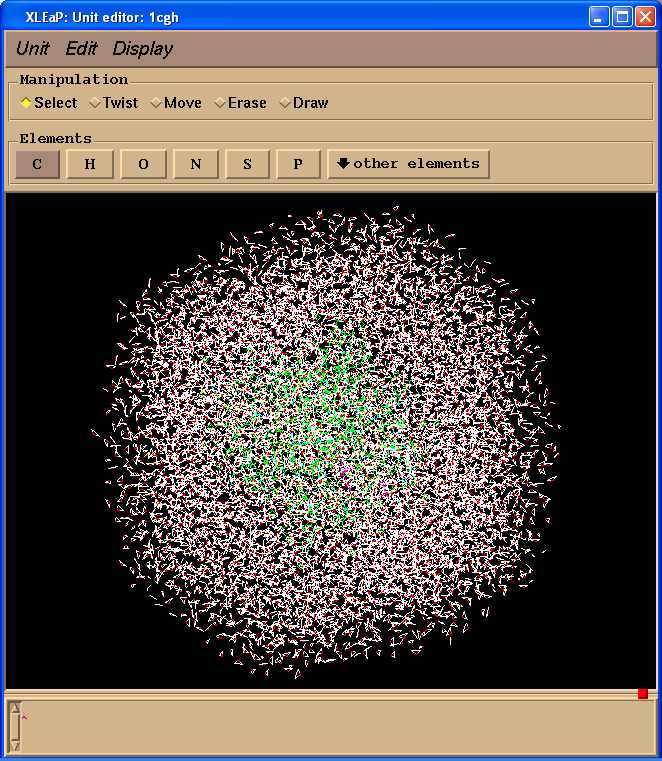
We shall run our simulations with the explicit solvent. For this section of the tutorial we shall be using the prmtop and inpcrd files (1cgh-water-box.top and 1cgh-water-box.crd, correspondingly) we created previously.
����������� Our minimization procedure will consist of a two stage approach. In the first stage we will keep the protein fixed and just minimize the positions of the counter-ions and water molecules. Then in the second stage we will minimize the entire system.
����������� There are two options for keeping the protein atoms fixed during the initial minimization.
����������� One method is to use the "BELLY" option in which all the selected atoms have the forces on them zeroed at each step. This results in what is essentially a partial minimization. This method used to be the favoured method but it can, especially if used with constant pressure periodic boundary simulations, lead to instabilities and strange artefacts. As a result of this it is no longer the suggested method.
����������� Instead we shall use "positional restraints" on each of the protein atoms to keep them essentially fixed in the same position. Such restraints work by specifying a reference structure, in this case our starting structure, and then restraining the selected atoms to conform to this structure via the use of a force constant. This can be visualized as basically attaching a spring to each of the solute atoms that connects it to its initial position. Moving the atom from this position results in a force which acts to restore it to the initial position. By varying the magnitude of the force constant so the effect can be increased or decreased. This can be especially useful with structures based on homology models which may be a long way from equilibrium and so require a number of stages of minimization / MD with the force constant being reduced each time.
Here is the input file we shall use for our initial minimization of solvent and ions:
1cgh: initial minimization of solvent and ions
�&cntrl
���� imin�� = 1,
� ���maxcyc = 500,
� ���ncyc�� = 250,
�� ��ntb��� = 1,
�� ��ntr��� = 1,
�� ��cut��� = 10
�&end
Hold the protein fixed
100.0
RES 1 228
END
END
The meaning of each of the terms are as follows:
Hold the protein fixed
100.0
RES 1 228
END
END
Command to run sander:
$AMBERHOME/exe/sander -O -i 1cgh-hold-protein.in \
����� -o 1cgh-hold-protein.out -c 1cgh-water-box.crd \
����� -p 1cgh-water-box.top -r 1cgh-hold-protein.rst \
����� -ref 1cgh-water-box.crd
Input files: 1cgh-hold-protein.in, 1cgh-water-box.crd, 1cgh-water-box.top
Output Files: 1cgh-hold-protein.out, 1cgh-hold-protein.rst
����������� Take a look at the output file from this job. You should notice that there is initially a rather high van-der-Waals (VDWAALS and 1-4 VDW) energy which represents bad contacts in both the water and protein. You should also see that the electrostatic energy (EEL) drops very rapidly. The RESTRAINT energy represents the effect of the harmonic restraints we have imposed. It rises rapidly but then levels off.
To have a quick look at the structure, in order to ensure it still sensible, before proceeding:
ambpdb -p 1cgh-water-box.top� < 1cgh-hold-protein.rst� > 1cgh-hold-protein.pdb
Now we have minimized the water and ions the next stage of our minimization is to minimize the entire system. In this case we will run 500 steps of minimization without the restraints this time. Here is the input file:
Entire system minimization
�&cntrl
���� imin�� = 1,
� ���maxcyc = 1000,
� ���ncyc�� = 500,
�� ��ntb��� = 1,
�� ��ntr��� = 0,
�� ��cut��� = 10
�&end
Note, choosing the number of minimization steps to run is a bit of a black art. Running too few can lead to instabilities when you start running MD. Running too many will not do any real harm since we will just get ever closer to the nearest local minima. It will, however, waste cpu time. Since minimization is generally very quick with respect to the molecular dynamics it is often a good idea to run more minimization steps than really necessary. Here, 500 should be enough.
����������� We run this using the following command. Note, we use the 1cgh-hold-protein.rst file from the previous run, which contains the last structure from the first stage of minimization, as the input structure for stage 2 of our minimization. Note, we also no longer need the -ref switch:
$AMBERHOME/exe/sander -O -i 1cgh-all-minimize.in \
������� -o 1cgh-all-minimize.out -c 1cgh-hold-protein.rst \
������� -p 1cgh-water-box.top -r 1cgh-all-minimize.rst
Now that we have successfully minimised our system the next stage in our equilibration protocol is allow our system to heat up from 0 K to 300 K. In order to ensure this happens without any wild fluctuations in our solute we will use a weak restraint, as we did in stage 1 of the minimization, on the solute (DNA) atoms. Prior to AMBER 8 the recommended method for maintaining temperature was to use the Berendsen thermostat (NTT=1). This method is not very efficient at ensuring the temperature remains even across the system and so one would typically have to use NMR restraints in order to ensure that the heating occurred very gradually over a timescale of about 20 ps. This was essential in order� to avoid problems with hot solvent cold solute etc. AMBER 8 now supports the new Langevin temperature equilibration scheme (NTT=3) which is significantly better at maintaining and equalising the system temperature. As a result the use of NMR restraints is no longer necessary. In fact it may even be possible to simply start our system at 300 K but we shall remain cautious and start from 0 K.
Note: you should use NTT=3 with care since while the Langevin temperature regulation scheme equilibrates the temperature better, as a method of maintaining a constant temperature during a production run it is probably not so good. Experience with using Langevin dynamics for temperature regulation has shown that the best approach in terms of obtaining accurate dynamics, would be to equilibrate the system initially with ntt=3, since it equilibrates temperature very well, and then switch to ntt=1 for the production phase. Alternatively, assuming the system is well equilibrated, you should be able to switch off the thermostat all together and just run the explicit solvent calculation with no thermostat (ntt=0). This is true since the force field is conservative, hence you should be able to maintain constant energy for a very long time. However, errors in the integrator (the fact that you make a timestep approximation) and errors involved in using a cutoff will eventually lead to you bleeding energy over time. Hence a weak thermostat is often a good idea as it corrects for these errors.
The problem with using ntt=3 in a production calculation, is that it alters the dynamics of the system. Essentially the short term dynamics (fast dynamics) are radically altered and so if one is interested in obtaining information about the fast dynamics of a system during the production phase then ntt=3 cannot be used since it corrupts this information. Berendsen (ntt=1) does not do this.
In terms of the long term dynamics ntt=3 also effects these but where such transitions are not directly dependent on the fast dynamics, i.e. something like an A-DNA to B-DNA structural conversion (as we will try later in this tutorial), then ntt=3 can actually server to increase the speed of these dynamics. In other words you can cover more phase space in less time. However, the langevin dynamics while not effecting the actual transition will effect the speed of the transition and as such if you want information regarding timescales of structural interconversions you again need to use ntt=1. However, if you are just interested in going from a high energy structure to a lower one quickly ntt=3 is probably the best method, but if you want to compute things like time correlation functions then you need accurate fast dynamical information so you need to avoid ntt=3. Thus the take home message is: Think carefully about how a thermostat will affect your simulation and choose appropriately.
Our final aim is to run production dynamics at constant temperature and pressure since this more closely resembles laboratory conditions. However, at low temperatures, as our system will be for the first few ps the calculation of pressure is very inaccurate and so using constant pressure periodic boundaries in this situation can lead to problems. Using constant pressure with restraints can also cause problems so initially we will run 20 ps of MD at constant volume. Once our system has equilibrated over approximately 20 ps we will then switch off the restraints and change to constant pressure before running a further 100 ps of equilibration at 300 K.
Since these simulations are significantly more computationally expensive than the in vacuo and implicit solvent simulations it is essential that we try to reduce the computational complexity as much as possible. One way to do this is to use triangulated water, that is water in which the angle between the hydrogens is kept fixed. One such model is the TIP3P water model with which we solvated our system. When using such a water model it is essential that the hydrogen atom motion of the water also be fixed since failure to do this can lead to very large inaccuracies in the calculation of the densities etc. Since the hydrogen atom motion in our DNA is unlikely to effect its large scale dynamics we can fix these hydrogens as well. One method of doing this is to use the SHAKE algorithm in which all bonds involving hydrogen are constrained (NTC=2). This method of removing hydrogen motion has the fortunate effect of removing the highest frequency oscillation in the system, that of the hydrogen vibrations. Since it is the highest frequency oscillation that determines the maximum size of our time step (1 fs for the in vacuo runs) by removing the hydrogen motion we can safely increase our time step to 2 fs without introducing any instability into our MD simulation. This has the effect of allowing us to cover a given amount of phase space in half as much time since we need only 50,000 steps to cover 100 ps in time as opposed to the 100,000 we required with a 1 fs time step.
Note, if your system is very inhomogeneous you may need to run short MD runs with smaller time steps, say 0.5 fs, before conducting long MD runs with a 2 fs time step. This approach allows the system to rapidly move out of an unfavourable geometry without wild oscillations in the energy.
So, stage 1, 10 ps of MD with weak positional restraints on the DNA. Here is the input file:
1cgh: 1ps MD with restraints on protein
&cntrl
� imin�� = 0,
� irest� = 0,
� ntx��� = 1,
� ntb��� = 1,
� cut��� = 10,
� ntr��� = 1,
� ntc��� = 2,
� ntf��� = 2,
� tempi� = 0.0,
� temp0� = 300.0,
� ntt��� = 3,
� gamma_ln = 1.0,
� nstlim = 5000, dt = 0.002
� ntpr = 100, ntwx = 100, ntwr = 1000
/
Keep protein fixed with weak restraints
10.0
RES 1 228
END
END
The meaning of each of the terms are as follows:
We run this using the following command. Note, we use the restrt file from the second stage of our minimization since this contains the final minimized structure. We also use this as the reference structure with which to restrain the protein to:
$AMBERHOME/exe/sander -O -i 1cgh-md-restr.in \
������� -o 1cgh-md-restr.out -c 1cgh-all-minimize.rst \
������� -p 1cgh-water-box.top -r 1cgh-md-restr.rst \
�� �����-ref 1cgh-all-minimize.rst -x 1cgh-md-restr.mdcrd
Note: This simulation may take considerable amount of time to run (about 2 hours on one 2.66 GHz Pentium 4 processor). You can run this yourself if you want or alternatively you can just use the output files provided in the links above.
Now that we have successfully heated our system at constant volume with weak restraints on the protein the next stage is to switch to using constant pressure, so that the density of our water can relax. At the same time, now we are 300 K we can safely remove the restraints on our protein.
We will run this equilibration for 100 ps to give our system plenty of time to relax.
1cgh: 100ps MD
&cntrl
� ��imin = 0, irest = 1, ntx = 7,
� ��ntb = 2, pres0 = 1.0, ntp = 1,
� ��taup = 2.0,
� ��cut = 10, ntr = 0,
� ��ntc = 2, ntf = 2,
� ��tempi = 300.0, temp0 = 300.0,
� ��ntt = 3, gamma_ln = 1.0,
� ��nstlim = 50000, dt = 0.002,
� ��ntpr = 100, ntwx = 500, ntwr = 1000
/
The meaning of each of the terms are as follows:
We run this using the following command. Note, we use the restrt file from the first stage of our MD since this contains the final MD frame, velocities and box information.
$AMBERHOME/exe/sander -O -i 1cgh-equilib-md.in \
������� -o 1cgh-equilib-md.out -c 1cgh-md-restr.rst \
������� -p 1cgh-water-box.top -r 1cgh-equilib-md.rst \
������� -x 1cgh-equilib-md.mdcrd
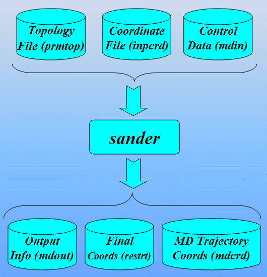
Note: This simulation may take considerable amount of time to run, on a single 2.66 GHz Pentium 4 processor it takes approximately 23 hours. You can run this yourself if you want but alternatively you can just use the output files provided in the links above.
Now that we have equilibrated our system it is essential that we check that equilibrium has successfully been achieved before moving on to running any production MD simulations in which we would hope to learn something new about our molecule.
There are a number of system properties that we should monitor to check the quality of our equilibrium. These include:
The following steps will illustrate how to extract this data and plot it and also discuss what we expect to see for a successful equilibration.
In this section we will look at the system properties that can be extracted from the data written to the mdout files during our 100ps of MD simulation. This includes the potential, kinetic and total energies, the temperature, pressure, volume and density. Here is file 1cgh-equilib-md.dat which contains time, temperature, pressure, total energy, potential energy, volume, and density, respectively.
Lets plot some of these to see if we have successfully reached an equilibrium. First of all the energies, potential and total:
| 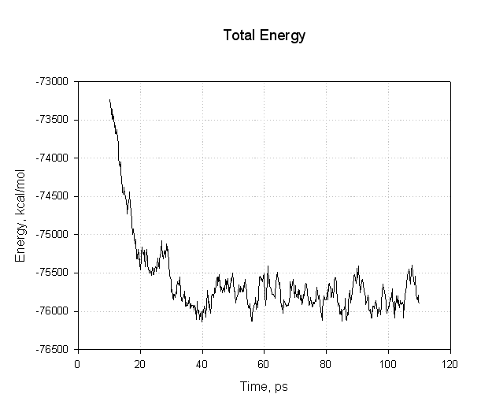 | 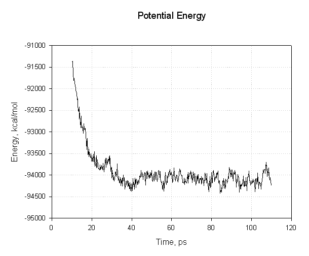 |
The important points to note with this plot is that all of the energies decreased during the first 30 ps. The potential energy, and consequently the total energy, initially decreased and then plateaued for the remainder of our simulation (40 to 110 ps) indicating that the relaxation was completed and that we reached an equilibrium.
Next we plot the temperature:
We see that the temperature remained more or less constant during the simulation indicating the use of Langevin dynamics for temperature regulation was successful.
Next the pressure:
For the first 20 ps the pressure is negative and increases sharply becoming positive. The negative pressures correspond to a "force" acting to decrease the box size and the positive pressures to a "force" acting to increase the box size. The important point here is that while the pressure graph seems to show that the pressure fluctuated wildly during the simulation the mean pressure stabilised around 1 atm after about 20 ps of simulation. This is sufficient to indicate successful equilibration.
Next we plot the volume:
Notice how the volume of our system (in angstroms3) initially decreases as our water box relaxes and reaches and equilibrated density, and thus volume. The smooth transitions in this plot followed by the oscillations about a mean value suggest our equilibration has been successful.
Finally, lets take a look at the density, we expect this to mirror the volume.
Our system has equilibrated at a density of approximately 1.025 g cm-3. This seems reasonable. The density of pure liquid water at 300 K is approximately 1.00 g cm-3 so adding a protein and the associated charges has increased the density by around 2.5 %.
Now we have analyzed our output files and seen that the main system properties suggest that our equilibration has been successful the next step is to consider the structures. Have they remained reasonable? One useful measure to consider is the root mean square deviation (RMSd) from the starting structure. We can use ptraj to calculate this for us as a function of time. In this situation we are interested in the backbone of our protein so we shall consider just the main backbone atoms, C, CA, and N. We will conduct a standard (not mass weighted) RMS fit to the structure of our final minimization (we are using file 1cgh-all-minimize.rst as a reference). Note, the time is set to 1 this time around since although we wrote to the trajectory file every 500 steps the time step was 2 fs - hence 100 steps = 1 ps. Here is the input file for ptraj:
trajin 1cgh-equilib-md.mdcrd.gz
reference 1cgh-all-minimize.rst
rms reference out 1cgh-backbone.rms @C,N,CA time 1
Lets run ptraj to calculate the RMSd of the protein backbone atoms:
$AMBERHOME/exe/ptraj 1cgh-water-box.top <analize-md.in
Here we see that the RMSd of the protein backbone atoms increases slowly as the protein relaxed within the solvent. We don�t see any wild oscillations.